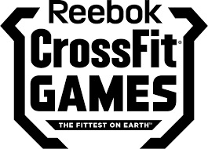

Rywalizacja
Ideą crossfitu jest rywalizacja - między uczestnikami treningu i ciągłe pokonywanie własnych barier. Nie chodzi jednak o to, żeby wygrać z innymi, tylko z sobą samym. Wszyscy się wspierają i dopingują - to jest ich pasja, ich sposób na życie - taki jest duch crossfitu. Ambitniejszych i sprawniejszych atletów z pewnością zainteresują zawody CrossFit Games, czyli ogólnoświatowe zawody crossfit. Zgłosić może się każdy, wystarczy zarejestrować się na oficjalnej stronie zawodów, nagrać film z wykonywania ogłoszonego WOD’a i szukać się w tabeli razem z profesjonalnymi zawodnikami. Najlepsi będą walczyć na CrossFit Games o tytuł Najbardziej wysportowanego mężczyzny/wysportowanej kobiety na Ziemi (The Fittest Man/Women On Earth). Oprócz kategorii z uwzględnieniem płci, istnieją kategorie wiekowe: dla zawodników powyżej 40. roku życia oraz po raz pierwszy w tym roku kategoria dla nastolatków między 15. a 18. rokiem życia, a także kategoria drużynowa.
Oprócz tego rozgrywane jest wiele oficjalnych zawodów crossfit, jak:
- CrossFit Filthy 150
- Pandaland CrossFit Challange
- Dubai CrossFit Championship
- Crossfit Mayhem Classic
- Crossfit Strength in Depth
- Crossfit German Throwdown
- Crossfit French Throwdown